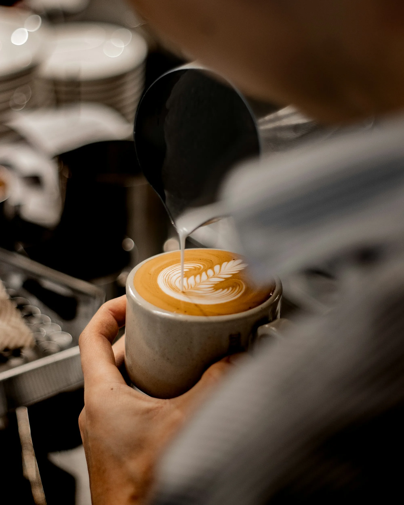
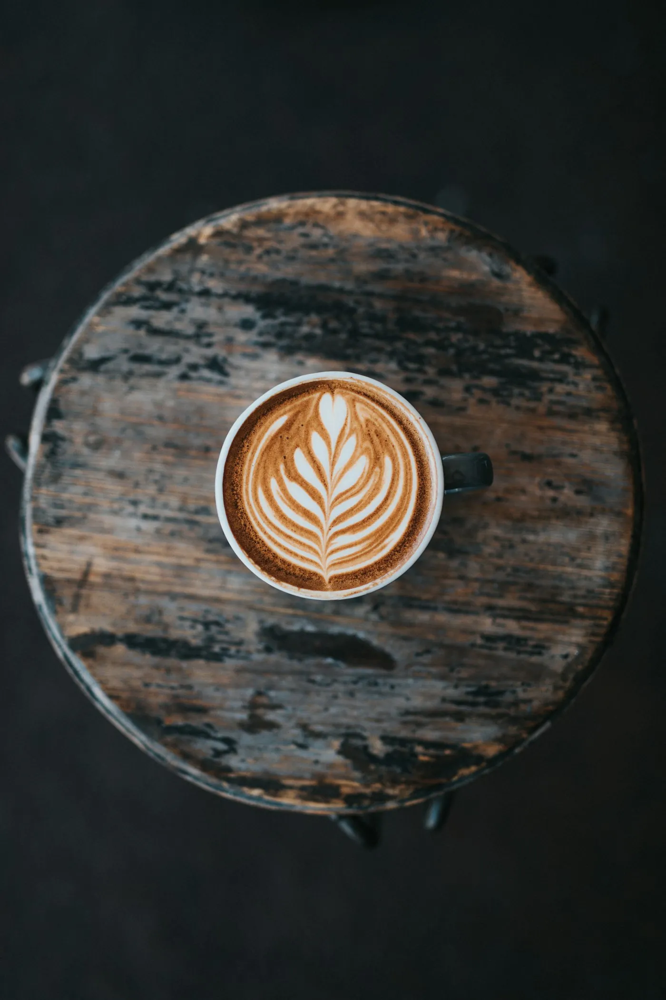
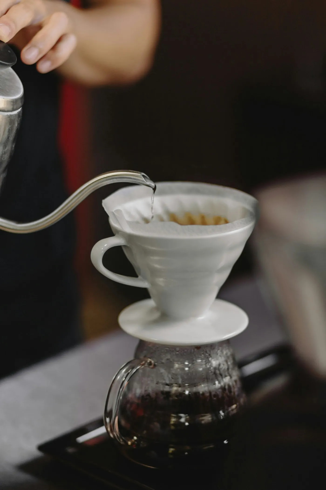
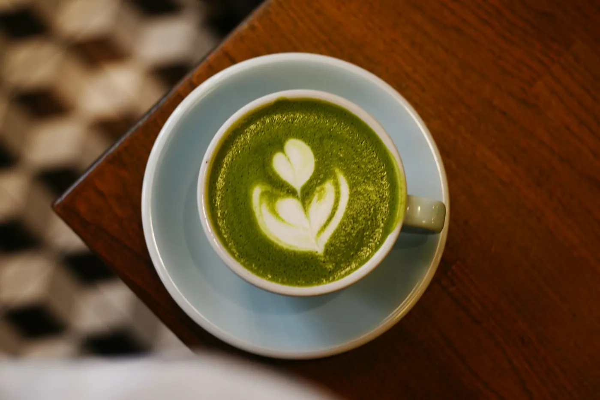
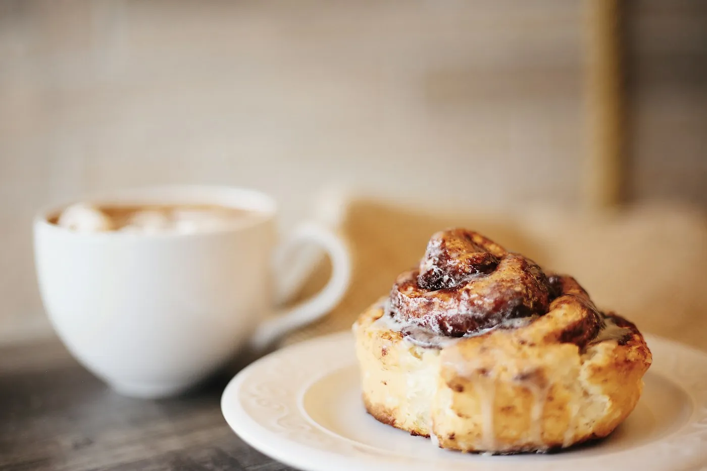
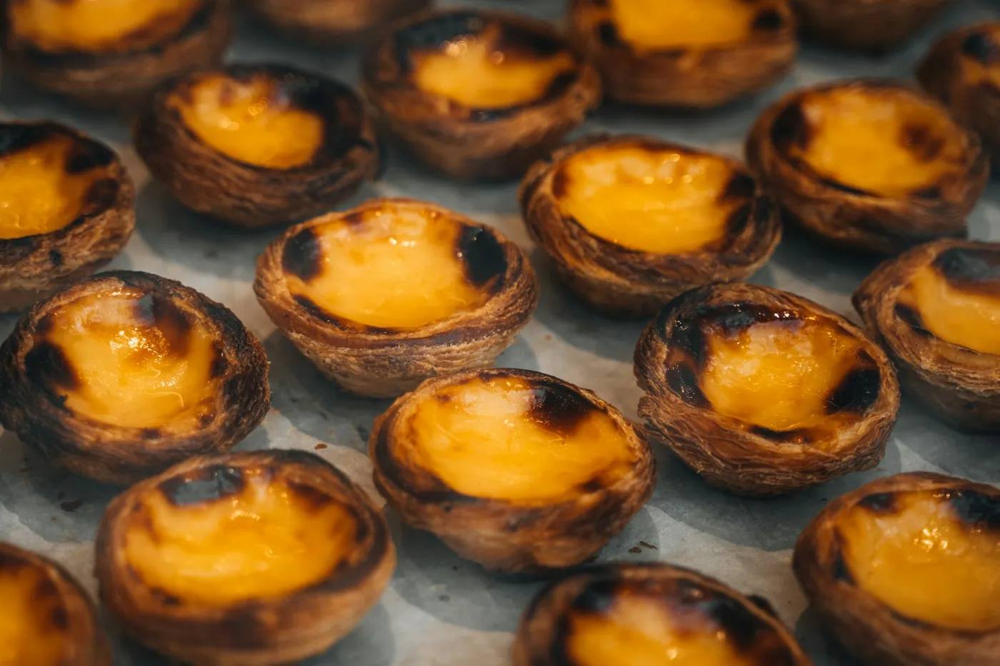
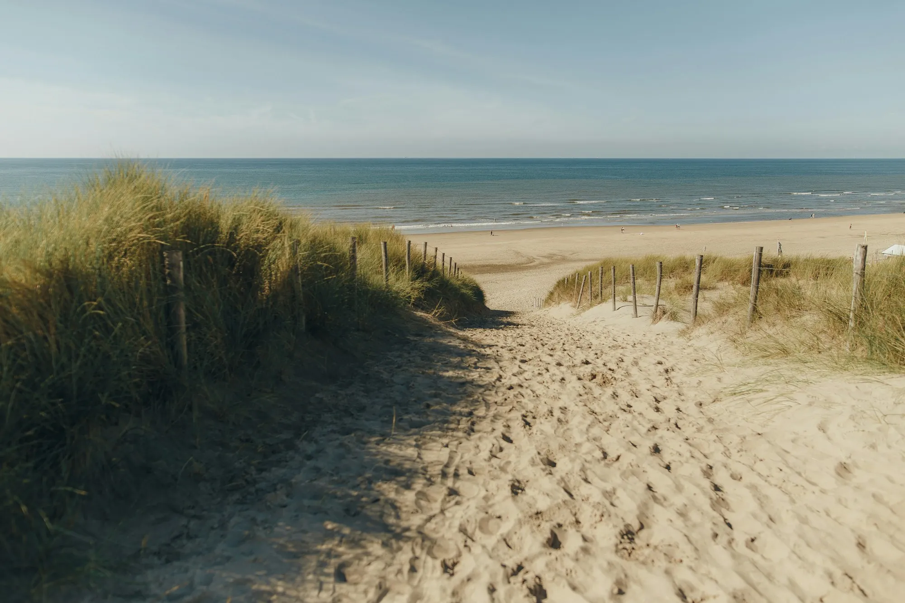
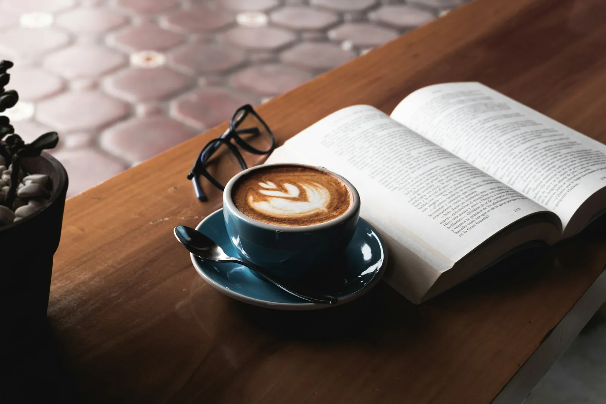
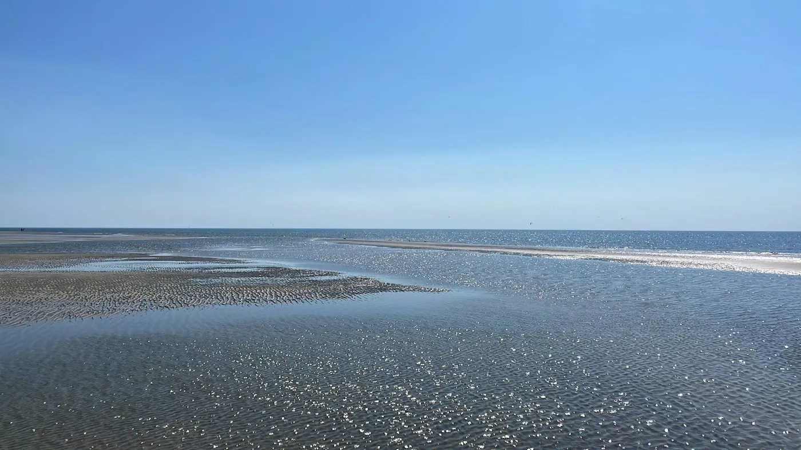

Ahoi! Koffie met haver, erwt of kokos.
Wij zijn Maria en Ruben. Bij ons komt er geen koemelk in je kopje: je kiest zelf welke plantaardige melk, en dat kost niks extra. Neem er een cinnamon roll bij en blijf even plakken.
Welke melk? Dat kies jij.
Bij Meerman is alles plantaardig, van in het begin. Niet omdat het moet, wel omdat het gewoon lekker is in een goeie cappuccino. Er staan drie flessen klaar.
Romig en zacht. De basis van onze Ostend fog.
Rustig van smaak, de koffie blijft vooraan.
Een tikje zoet. Lekker in ijskoffie of chai.

★★★★★“Ze hebben heerlijke vegan koffie, je hebt zelf de keuze uit drie verschillende melk soorten. Haver, erwten en kokos (gratis).”Eezri a. op Google

Bonen van branders die we zelf graag drinken
Ruben leerde het vak bij Way Coffee Roasters in Gent. Achter de toog wisselen we af tussen Belgische en buitenlandse branders, dus er is altijd iets nieuws om te proeven.
in onze molen
- Andy RoastersAntwerpen
- Wide AwakeBrussel
- ReplicaLeuven
- Hoppenworth & PlochDuitsland
- OnyxVerenigde Staten
Een zak bonen mee naar huis?Vraag het aan de toog.
Liever matcha, chai of iets zoets?
Wat er die dag aan gebak ligt, zie je aan de toog. Alles gaat ook mee, in een beker of een zakje.

schenken
Te drinken
- Ostend fogvan het huisHavermelk met earl grey
- MatchaVan Iro
- ChaiVan Prana, bij ons gebrouwen
- Warme chocoladeMet cacao van Ander
Erbij
- Cinnamon roll
- Pastel de nata
- Double chocolate couqueMet chocoladeglazuur
- Huisgemaakte cookies
Alles met haver, erwt of kokos.



“Ruben zorgde voor de koffie, Maria voor het dessert.”
Zo ging onze eerste date, negen jaar geleden, op het strand van Oostende.
- Negen jaar geleden
Een date op het strand
Koffie en dessert, met de voeten in het zand. Daar begon het.
- 2024
Terug naar zee
Ruben komt uit Brussel, Maria uit Vlaanderen. De kust trok ons allebei terug.
- 2025
Meerman opent
In de Christinastraat vonden we ons plekje.
Voor alle meermensjes
Scheepslampen aan het plafond, houten muren en tafels, en een Kewlox-kast vol boeken die je mag lenen of ruilen.
Meermensjes, zo noemen we onze vaste gasten. Kom je met de kinderen? Er ligt speelgoed klaar, dus neem gerust je tijd.

Op zaterdag, zondag en feestdagen blijft de laptop dicht. In de week ben je er gewoon welkom mee.
Een tweede koffie? Altijd.
In het weekend is Meerman er om bij te praten en een boek open te slaan. Zoek een plekje en blijf zo lang je wil.
- Geen reservatiesJe loopt binnen en zoekt een plekje.
- Boek vergeten?Neem er een uit de kast, of ruil er een.
- TerrasZit het weer mee, dan drink je je koffie buiten.
- Ook om mee te nemenOp weg naar het strand? Je koffie gaat mee.
Tot in de Christinastraat
Christinastraat 46, 8400 Oostende
Tramhalte Marie-Joséplein ligt vlakbij.
17u
17u
17u
17u
17u
Woensdag tot zondag van 9 tot 17u. Maandag en dinsdag dicht.

“Meerman in Oostende is een echte aanrader voor koffieliefhebbers.”
Sterckx M.